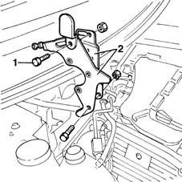
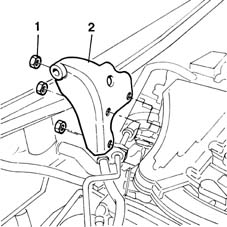
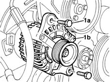
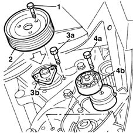
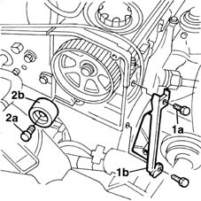
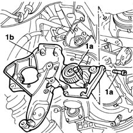

4130B32 power steering pump mount - r r
- Path
- Procedures > 41 STEERING > 4130 POWER ASSISTED STEERING > 4130B power steering hydraulic sytem > 4130B32 power steering pump mount - r r
- Kind
- repair procedure (removal / refitting; the operation number is the code)
- Applies to
- all engines; all production periods
- Interactive page
- https://sloeber94.github.io/elrnDB-fMltpl/en/#/2891694
Applies to: engines: 1.6 16v; all production periods
 Removing
Removing
 Refitting
RefittingOpen the bonnet lid.
1092C14 power steering pump/self levelling suspension pump pulley - r + r with belt removed
4130B20 power steering pump r r
1. Undo the fixing bolts.
2. Remove the power assisted steering pump front mounting brackets.

Applies to: engines: 1.6 16v; all production periods
1. Undo the fixing nuts.
2. Remove the rear power steering pump mounting bracket.

Applies to: engines: 1.6 16v; all production periods
Refitting
RemovingPosition the rear power steering pump mounting bracket.
Tighten the fixing nuts to torque.
 | Fastening | Component | Ø | Value (daNm) |
|---|---|---|---|---|
- | Nut | EXHAUST MANIFOLD/S | M8 | 2.5 |
Position the front power steering pump mounting brackets.
Tighten the fixing bolts.
4130B20 power steering pump r r
1092C14 power steering pump/self levelling suspension pump pulley - r + r with belt removed
Close the bonnet lid.
Applies to: engines: 1.9 JTD 8V; all production periods
Removing
Refitting4450B10 Front WHEEL (one) - R.R.
7055B42 Additional FRONT WHEEL ARCH (one), left or right - R.R.
1092G10 single engine belt r r
1092A12 crankshaft pulley - r+r for versions with air conditioner
1032D12 timing system protective cover(s) - r + r
1016A10 sound-proofing cover - r + r
1008C10 power unit upper reaction link r r
1008C14 engine link bracket - r r
1084A16 oil dip stick pipe - r r
1. Tighten the fixing bolts (1a) and move the alternator (1b) sideways.

Applies to: engines: 1.9 JTD 8V; all production periods
1. Undo the fixing bolts.
2. Remove the power steering pump pulley.
3. Undo the fixing bolts (3a) and move the power steering pump (3b) backwards, releasing it from the support.
4. Undo the bolt (4a) and remove the auxiliary belt tensioner (4b).

Applies to: engines: 1.9 JTD 8V; all production periods
Lower the lift.
1. Undo the fixing bolts (1a) and remove the timing belt (1b) rear shield.
2. Undo the fixing bolt (2a) and remove the timing drive belt fixed tensioner (2b).

Applies to: engines: 1.9 JTD 8V; all production periods
1. Undo the fixing bolts.
2. Remove the power steering pump support.

Applies to: engines: 1.9 JTD 8V; all production periods
Refitting
RemovingPosition the power steering pump support.
Tighten the fixing bolts to torque.
| Fastening | Component | Ø | Value (daNm) |
|---|---|---|---|---|
- | Bolt | POWER STEERING PUMP SUPPORT/BRACKET | M10 | 5 |
| Fastening | Component | Ø | Value (daNm) |
|---|---|---|---|---|
- | Bolt | POWER STEERING PUMP SUPPORT/BRACKET | M8 | 2.5 |
Tighten the timing drive belt fixed tensioner fixing bolt.
| Fastening | Component | Ø | Value (daNm) |
|---|---|---|---|---|
- | Bolt | FIXED SINGLE SERVICE BELT TENSIONER | M8 | 2.5 |
Positin the timing belt rear shield and tighten the fixing bolts.
Raise the ramp.
Positin the auxiliary belt tensioner and tighten the fixing bolt to torque.
| Fastening | Component | Ø | Value (daNm) |
|---|---|---|---|---|
- | Bolt | SINGLE SERVICES MOBILE BELT TENSIONER | M8 | 2.5 |
Place the power steering pump in its housing and tighten the fixing bolts to torque.
| Fastening | Component | Ø | Value (daNm) |
|---|---|---|---|---|
- | Bolt | POWER STEERING PUMP | M8 | 2.5 |
Fit the power steering pump pulley tightening the fixing bolts to torque.
| Fastening | Component | Ø | Value (daNm) |
|---|---|---|---|---|
- | Bolt | POWER STEERING PUMP DRIVE PULLEY | M8 | 2.5 |
Position the alternator on the mounting and tighten the fixing bolts to torque.
| Fastening | Component | Ø | Value (daNm) |
|---|---|---|---|---|
- | Nut | ALTERNATOR ASSEMBLY | M10 | 5 |
| Fastening | Component | Ø | Value (daNm) |
|---|---|---|---|---|
- | Nut | ALTERNATOR ASSEMBLY | M12 | 7 |
4450B10 Front WHEEL (one) - R.R.
7055B42 Additional FRONT WHEEL ARCH (one), left or right - R.R.
1092G10 single engine belt r r
1092A12 crankshaft pulley - r+r for versions with air conditioner
1032D12 timing system protective cover(s) - r + r
1016A10 sound-proofing cover - r + r
1008C10 power unit upper reaction link r r
Topics linked from this page (12)
- 1008C10 power unit upper reaction link r r
- 1008C14 engine link bracket - r r
- 1016A10 sound-proofing cover - r + r
- 1032B14 toothed timing belt - r + r for timing adjustment or replacement versions with air conditioner
- 1032D12 timing system protective cover(s) - r + r
- 1084A16 oil dip stick pipe - r r
- 1092A12 crankshaft pulley - r+r for versions with air conditioner
- 1092C14 power steering pump/self levelling suspension pump pulley - r + r with belt removed
- 1092G10 single engine belt r r
- 4130B20 power steering pump r r
- 4450B10 Front WHEEL (one) - R.R.
- 7055B42 Additional FRONT WHEEL ARCH (one), left or right - R.R.